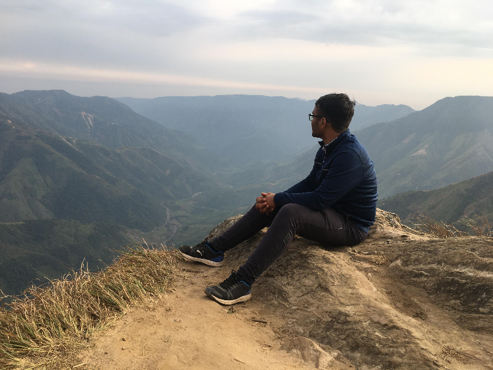

Latest project
3D Computer Vision Summer School
Attended the 3D Computer Vision Summer School at IIIT Bangalore in May 2024.
Implemented 3D vision models like PointNet and MeshCNN. Used pre-trained models including SMPL-X, COLMAP, NeRF, Point-E, shap-e, 3D pose estimation, face and body reconstruction models, and Gaussian Splatting.
Learned industry tools like Trimesh, Open3D, PyMeshLab, and Blender.
Technologies used:
- PyTorch
- PointNet
- MeshCNN
- NeRF
- Gaussian Splatting
- Open3D
- Blender
